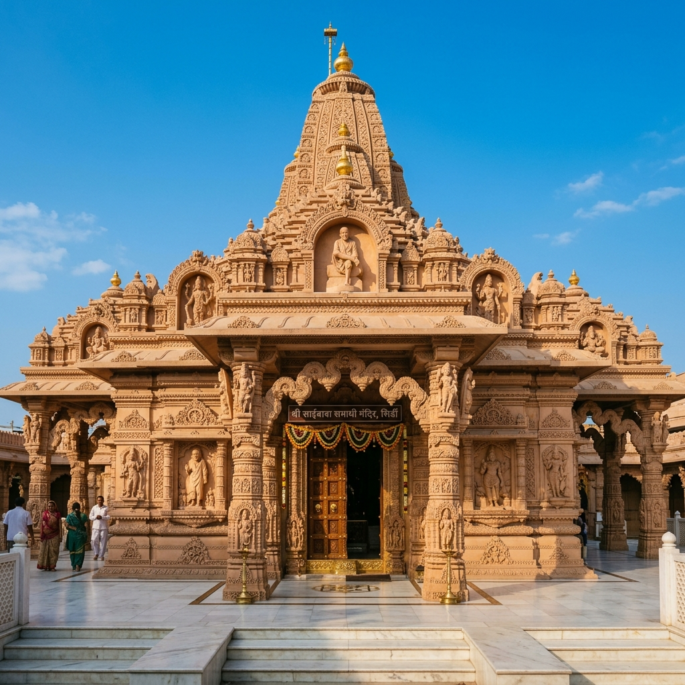
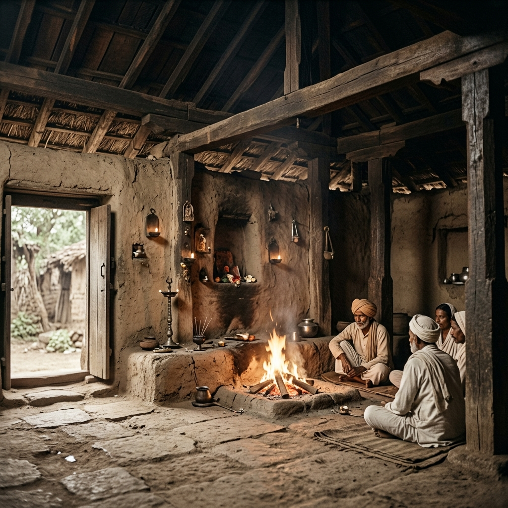
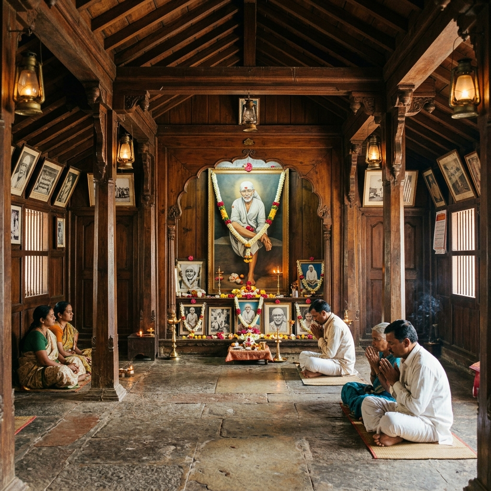

About Temple
Visiting Pandharpur Vitthal Temple feels like being part of something much bigger than just a temple visit. The place is filled with devotion, especially during the famous Wari pilgrimage, where lakhs of devotees walk for days chanting the name of Lord Vitthal. Even on normal days, the temple carries a strong spiritual energy that feels simple, emotional, and deeply connected to faith. It’s not about silence here, but about devotion expressed through collective belief and tradition.
Wari Pilgrimage
Collective Devotion
Spiritual Energy
Deeply Connected

History & Significance

Pandharpur is one of the most important pilgrimage sites in Maharashtra and is dedicated to Lord Vitthal, a form of Lord Krishna. The temple has a strong connection with saints like Sant Tukaram and Sant Dnyaneshwar, who spread the Bhakti movement. The tradition of Wari, where devotees walk from different parts of Maharashtra to Pandharpur, has been followed for centuries and represents deep devotion and discipline.
Bhakti Movement
Tukaram & Dnyaneshwar
Wari Devotion
Century-Old Path
What Makes It Unique
Discover the unique factors that set Pandharpur Temple apart from other shrines.


Travel Guide
Convenient ways to reach the temple in Pandharpur.
Option 1: Driving Routes
From Pune, it is about 210 km and takes around 4–5 hours by car. From Mumbai, it is around 400 km and takes about 7–8 hours via well-paved national highways.
Pune (4-5 hrs) | Mumbai (7-8 hrs)Option 2: Railways & Local Cabs
Pandharpur has its own railway station. Trains run regularly from Pune, Mumbai, Solapur, and other cities. Local transit easily connects to the temple area.
Rail Connection: Pandharpur StationOption 3: public sleeper Buses
Daily government MSRTC buses and private luxury sleeper buses operate from Pune, Mumbai, Kolhapur, and Solapur directly to Pandharpur.
Essential Information
Important details regarding timings, queues, and ideal visiting slots.
Timings & Queues
Opens at 4:00 AM and closes at 11:00 PM. Early mornings are best; Wari festival and Ekadashi days see extremely long queues.
Entry & Darshan
General entry is free. Devotees can stand in the "Charan Sparsh" (feet touch) line or the much faster "Mukha Darshan" (face view) line.
Best Time to Visit
October to February is cool. Ashadhi and Kartiki Ekadashi represent the Wari peak, making the town extremely crowded.
Location & Coordinates
Pandharpur town, Solapur district, Maharashtra, India